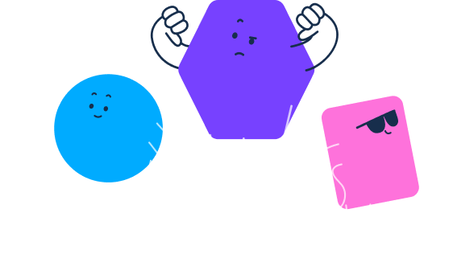

INFACE AI면접 결과 (2026.00.00 응시)
AI 역량 평가 리포트
홍길동 기획∙경영 00년차

AI 면접결과 분석
순위 정보
전체 순위
상위 12%
지원분야 순위
4,400등
전체인원
8,800명
지원분야 순위
상위 12%
지원분야 순위
4,400등
전체인원
8,800명
신뢰도 분석
AI면접, AI게임, 성향분석 등을 모두 안정적으로 진행하였으며, 결과처리에 이상이 없습니다.
AI 면접
정상

AI 게임
주의
성향분석
정상


평가상세는 6등급으로 나뉘어진 등급 내에서 본인의 성적에 따라 해당 결과를 제시합니다.
본 등급은 상대평가이며, AI가 응시자가 답변한 내용을 판단한 결과입니다.
또한 본 AI의 평가결과는 실제 채용에서의 평가기준과는 다를 수 있으니 이점 유의해 주시기 바랍니다.
안내
AI 면접 결과분석은 기본면접/심층면접 등을 통해 AI가 응시자의 답변내용 및 태도 등을 평가한 결과가 제시됩니다.
이때, 평가에 활용되는 것은 응시자의 답변내용인데 이것을 AI 자연어 처리, 어휘분석을 한 데이터와 응시자의 면접 태도를 안면분석, 음성분석을 한 데이터가 포함됩니다.
이러한 결과는 지원분야와 전체에서의 등급으로 보여주며, 총 6가지 등급으로 나뉘어집니다.
최우수/우수/양호/보통/미흡/평가미달 등급으로 나뉘는데 이러한 등급은 지원자간의 상대평가에 따른 것으로, 절대적인 기준은 아니며 참고용 자료로 활용하면 됩니다.
또한, 이러한 등급의 분류는 응시자의 변동 및 AI의 지속적인 딥러닝을 통해 수시로 등급이 변동될 수 있습니다.
평가등급
평가 상세
AI면접, AI게임, 성향분석 등을 모두 안정적으로 진행하였으며, 결과처리에 이상이 없습니다.
개인성향
조직역량
개인역량
우수 역량
기획력, 문제해결
부족 역량
글로벌, 분석력

설명
AI 역량을 평가하기 위해 항목의 개수가 4개 미만이거나 작성내용이 충분치 않을 경우, 평균 점수에 비해 낮게 나올 수 있습니다.
또한 우수/부족 평가는 본인 전체 역량 중 상대적 평가입니다.
역량점수 상세
책임감
열의
이해
이해
적응력
영향력

홍길동님은 책임감이 매우 강하며 조직의 신뢰를 받는
안정적인 실무형 인재입니다.
홍길동님은 계획성 글로벌 역량이 가장 우수한 역량 항목이에요!
성실책임감은 주어진 과업을 끝까지 완수하며 규범을 준수하려는 태도입니다.
창의성은 기존 방식에 얽매이지 않고 새로운 대안을 모색하려는 능력입니다.
홍길동님은 책임감이 매우 강하며 조직의 신뢰를 받는 안정적인 실무형 인재입니다.
반면, 조직이해 자기계발 역량이 상대적으로 낮은 편이에요. 조직이해는 혁신적인 아이디어를 제안하며 문제해결에 있어 유연한 사고를 발휘합니다.
혁신적인 아이디어를 제안하며 문제해결에 있어 유연한 사고를 발휘합니다.
직무분석
지원분야
품질관리
필요 성향
적극성 성실성
필요 역량
추진력 조직이해
설명
자연어 처리용 신경망 모델인 DeBERTa를 사용하여 응시자의 자기소개서를 분석합니다. 분석된 내용으로 지원자가 지원한 지원분야와 얼마나 적합한지에 대한 정보를 제공합니다. 이러한 직무적합도는 적합도 수치를 %로 표시하게 됩니다. 수치가 높을수록 AI가 판단하기에 더 높은 직무적합도를 보이는 것으로 추론합니다. 다만, 현대사회에서의 직무는 그 종류와 범위가 매우 광범위하고 세세하기 때문에 절대적인 결과로 받아들이는 것은 올바르지 않습니다. 그러므로 지원자 평가에 적절히 참고해야 합니다.
직무적합도
26%
주의
응시자의 자기소개서 내용이 지원 분야와 얼마나 일치하는 지를 보여줍니다.
적합
<이름>님의 답변 분석내용이 지원한 분야에 적합합니다.
주의
분석한 결과가 지원자의 지원분야와 대체적으로 적합하지 않습니다.
다만, 세부지원분야의 적합도는 고려하지 않은 결과입니다.
홍길동님!
혹시 이런 직무는 어떠세요?
AI는 다음과 같은 직무를 추천했어요.
생산 조립 기능제조 도금 합금
인성요인 분석
책임감
열의
이해
이해
적응력
영향력

홍길동님!
홍길동님은 계획성 글로벌 역량이 가장 우수한 역량 항목이에요!
성실책임감은 주어진 과업을 끝까지 완수하며 규범을 준수하려는 태도입니다.
창의성은 기존 방식에 얽매이지 않고 새로운 대안을 모색하려는 능력입니다.
홍길동님은 책임감이 매우 강하며 조직의 신뢰를 받는 안정적인 실무형 인재입니다.
반면, 조직이해 자기계발 역량이 상대적으로 낮은 편이에요. 조직이해는 혁신적인 아이디어를 제안하며 문제해결에 있어 유연한 사고를 발휘합니다.
혁신적인 아이디어를 제안하며 문제해결에 있어 유연한 사고를 발휘합니다.
응답 신뢰도 주의
응답 신뢰도는 인성 검사의 신뢰성을 판단합니다.
응답 일관성은 검사를 받을 때 집중해서 성실하게 응답한 정도를 나타냅니다. 비전형 응답자수와 응답 성실도를 포함하여 응답 일관성 점수가 주의영역에 위치하고 있을 경우, 성실하고 일관되게 답변을 하였는지 유심히 관찰할 필요가 있습니다. 사회적 바람직성은 자신의 성격을 타인이나 조직에게 사회적으로 바람직하게 보이려고 하는 정도를 의미합니다.
이 신뢰도가 주의일 경우 타인에게 보기 좋게 보이도록 자신의 성격을 과장하였을 가능성이 있습니다.
응답 일관성
적합
검사 신뢰도

적합
주의
사회적 바람직성
주의
검사 신뢰도
적합
주의
공감능력 분석
평균
낮음
높음
설명
공감 능력 분석 결과를 제시합니다.
이러한 분석은 특정 감정을 공감하거나 이해할 수 있는 지를 나타내는 것으로 응시자의 공감능력을 평가할 수 있습니다.
주의에 해당될 경우 일반적인 직무에서는 문제되지 않지만
대인관계를 요구하는 직무에 있어서는 PI결과를 심도있게 분석할 필요가 있습니다.
도전형
안정형
분석적
직관적
의사결정 유형분석
어떤 의사결정을 할 때 활용되는 정보는 이익/손실 정보와 확률 정보입니다.
안정형은 의사결정 시에 좀 손실을 줄이려는 방향으로 행동하며, 도전형은 이와는 다르게 이익을 늘리려는 방향으로 행동하게 됩니다.
분석적은 확률 정보를 평균보다 좀 더 의지하는 성향을 나타내며, 직관적은 확률 정보를 평균 이하로 활용하는 성향을 의미합니다.
이러한 구분은 좋고, 나쁨이 있는 것이 아니라 성향의 특성을 나타내므로 어떠한 결과를 보여도 문제가 되는 것은 아닙니다
AI게임 분석
지원자 역량 프로파일
AI 게임을 통해 자신의 부족한 역량을 측정할 수 있습니다.
또한 각 게임별로 측정하는 역량이 무엇인지 확인할 수 있으며 부족한 역량에 대한 게임을 집중적으로 연습할 수 있습니다.
정답이 있는 게임의 경우 이러한 집중적인 연습을 통해 유형과 게임 방식을 익힐 수 있습니다.
우수 역량
추론
부족 역량
멀티태스킹
상대점수는 평균대비 자신의 점수 위치를 100점 기준으로 표시한 점수이며 다른 사용자의 점수가 누적되면 변동이 될 수 있습니다.
집중력 변화 패턴분석
높음
낮음
전반부
후반부
설명
AI게임의 전반, 후반의 집중력 변화를 보여주는 패턴입니다. 이때, 사용되는 정보는 게임의 정답률, 응답 속도 등입니다.
지원자의 경우 초기에 평균 이상의 집중력을 보이고,후반에는 집중력이 높아지는 패턴을 보여주는데 이것이 좋고, 나쁜 결과를 의미하는 것은 아닙니다.
다만, 평균적으로 후반기에 집중력이 다소 낮아지는 형태가 일반적으로 그 반대일 경우 PI 분석 결과를 더욱 면밀히 살펴 보는 것이 권장되고 있습니다. 이러한 경우라도 그 결과가 문제가 되는 것은 아닙니다.
AI면접관 피드백

AI면접관이 각 답변에 대해서 피드백을 알려줘요!
총평
본 결과분석은 딥러닝으로 학습한 AI가 응시자의 답변내용 및 태도 등을 분석하여 해당 결과를 제시합니다.
AI가 평가한 점수를 바탕으로 전체 응시자 수준을 6등급으로 나누고 그에 속하는 구간에 결과를 제시합니다. 또한 해당 점수를 바탕으로 동일하게 적용하여 본
결과분석은 딥러닝으로 학습한 AI가 응시자의 답변내용 및 태도 등을 분석하여 해당 결과를 제시합니다. AI가 평가한 점수를 바탕으로 전체 응시자 수준을 6등급으로 나누고 그에 속하는 구간에 결과를 제시합니다.
개선점
6등급은 최우수/우수/양호/보통/미흡/평가미달 등급으로 나누어지며, 이러한 등급은 응시자간의 상대평가에 따른 것으로 실제 채용에서의 기준은 아니며
단순 참고용 자료로 활용해 주시기 바랍니다. 또한 이러한 등급의 분류는 응시자의 변동될 수 있는 점 참고부탁드립니다.
CheckList
지원자의 입력 내용 중에서 면접 시 필요한 질문을 AI가 정리한 내용입니다.

- 필리핀과 일본 부유식 해상풍력 프로젝트에서 고객사의 요구사항을 반영한 설계안을 제시했다고 하셨는데 이 과정에서 특히 중요한 과제는 무엇이었으며, 이를 해결하기 위해 어떤 노력과 협업을 진행하셨나요?
- 연구배 전단현상에 대한 데이터를 분석하고 보고하여 긍정적인 피드백을 받았다고 하셨는데, 이 발견이 프로젝트에 미친 구체적인 영향과 이를 식별하는 과정에서 겪었던 주요 도전은 무엇이었습니까?
- 프로젝트 진행 중 발생한 예상치 못한 문제 상황을 어떻게 해결하셨는지, 이 과정에서 가장 중요한 의사결정을 무엇입니까?
- 문제 해결 이후 동일한 이슈가 재발하지 않도록 어떤 예방적 조치를 마련하셨나요?
- 프로젝트 진행 중 발생한 예상치 못한 문제 상황을 어떻게 해결하셨는지, 이 과정에서 가장 중요한 의사결정을 무엇입니까?
- 문제 해결 이후 동일한 이슈가 재발하지 않도록 어떤 예방적 조치를 마련하셨나요?
설명
체크리스트는 AI가 입력된 자소서를 분석하여 질문이 필요한 부분을 정리하여 제시한 내용입니다. 면접 시 필요할 경우 활용할 수 있습니다.